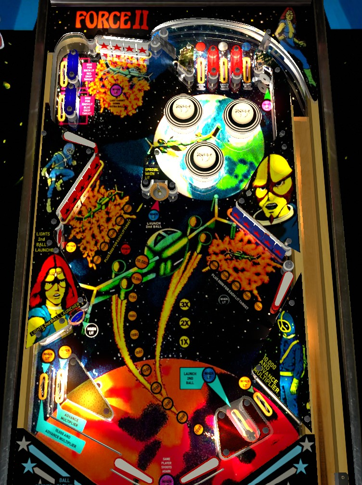

Try to always be in multiball. Red, white, and blue top lanes light the upper right, middle left, and lower left standup targets respectively. Hit a lit standup target to qualify the center saucer and the kicker next to the right flipper for a lock; lock a ball to start 2-ball multiball. In multiball, clear drop target banks for bonus multipliers and increasing scoring. Extra ball comes from clearing the white drop targets after collecting all three colour lanes.
Top lanes always score 5,000 points. Roll through a lit lane to unlight that lane and light one of the standup targets around the playfield. The upper right standup target near the bumpers is red; the middle left standup target is white; the lower left standup target is blue. Standup targets score 5,000 points and a bonus advance. If a standup target is lit, hitting it will light the center saucer and the kicker lane behind the right flipper for a lock.
Making a ball into the saucer or kicker when lit will start 2-ball multiball. When not lit, during a 3-ball game only, the center saucer spots a red drop target, and the right kicker spots a blue drop target.
There are no specific scoring rules or multipliers during multiball; it is merely a chance to make other progress on the table with the safety net of a second ball in play.
The only way to return to the top of the table for additional top lanes is an awkwardly angled shot through the spinner in the top-center of the table, which always scores 1,000 points per spin. The only time collected colour lanes reset is if all 3 have been collected, and then the ball drains- otherwise, coloured lanes are preserved. When a multiball ends, standup targets stay lit, and hitting any one of them instantly relights the locks. Colours are also preserved if the ball drains with just 1 or 2 of them lit.
Lit drop targets score 5,000 points. Unlit drop targets score 500 points. Any drop target down scores a bonus advance. Clearing a target bank scores 5,000 points times the number of lit targets, increases the bonus multiplier by 1x, lights one additional target, and resets the target bank. The number of lit targets is carried over from ball to ball, unless all 5 were lit, in which case draining the ball resets that bank back to 3 lit targets. On a 5-ball game, only 1 target is lit for free at the start of the game; on a 3-ball game, 2 targets are lit at the start of the game.
Any target down in this bank scores 5,000 points and a bonus advance. Just like the red and blue target banks, completing this bank increases the bonus multiplier. If the red, white, and blue lights from the top lanes have all been collected, completing the white target bank scores an extra ball.
The upper left side lane is nearly impossible to reach from any flipper. A lucky ricochet or a very precise use of the upper left flipper is required to make it through this tiny loop. The switches in this lane score 3,000 points for each lit target in the red bank (upper switch) and blue bank (lower switch). This lane's minimum value is 6,000 points in a 5-ball game and 12,000 points in a 3-ball game.
The left side of the table bottom is conventional. On the right, there is no slingshot, and there are two lanes just to the right of the flipper; the first is the kicker/lower lock lane, and the second is an out lane. The two out lanes alternate being lit for 10,000 points and a bonus multiplier every few seconds. The left in lane is lit for bonus multiplier only if the white top lane has been collected. The kicker spots a blue target when not lit and starts multiball when lit after a lit standup target has been scored.
Bonus is advanced by any drop target down and by each of the two switches in the upper left side lane. Max base bonus is 29,000 points. Bonus multiplier is advanced by completing any drop target bank or any lit in/out lane. Max bonus multiplier is 6x. Max bonus is 6x 29,000 = 174,000 points. There is no holdover for base bonus or multiplier and there is no mid-ball bonus collect.
In competition/novelty play, specials and extra balls both score 50,000 points.
When originally produced, this game only featured 6-digit displays. However, scores over 1,000,000 points are not uncommon. Watch the scoreboard closely to ensure score rollovers are adequately recorded.

All copyrighted names and terms in this document belong to their respective owners. The information provided in this document is for educational purposes only and no infringement is intended.
Back to top To game list To main page